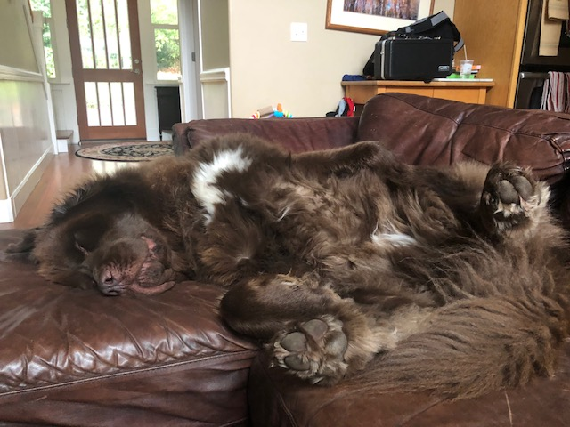

About Me

[Beside a theater, in the alley] (Our hero, Navin, is sitting at the bottom of a staircase, looking like a bum.) Huh? I am not a bum, I'm a jerk. I once had wealth, power, and the love of a beautiful woman. Now I only have two things. My friends and... uh... my thermos. Huh? My story? O.k. It was never for easy for me. I was born a poor black child. I remember the days sitting on the porch with my family singing and dancing, down in Mississippi. [Outside of Navin's house] (Everyone is dancing and singing on the porch. Navin has no rhythm.) Gonna jump down turn around pick a bail of cotton, Gonna jump down turn around pick a bail of hay... [Inside, at the kitchen table] Mother Well I hope everybody's good and hungry! Corn bread... Father Ain't we forgetting something? Mother No I'm not. Today is Navin's birthday. All Happy Birthday! Mother And I cooked up your favourite meal: tuna fish salad on white bread with mayonnaise, a Tab and a couple of Twinkies. Here darling. Navin Gee mom, thanks! Elmyra I got you a present. Navin Gee Elmyra! Elmyra I made it myself! Taj We got you something too. A half bottle of Lilac Vegetal from both of us. Pierre I drew you this picture. Young Brother Here! Navin Thank you! Father I want you to have my Zippo. Navin Gee, you've had this since the war. Thanks. Thanks everybody. God bless us, everyone. Mother Navin! [Navin's bedroom] Father (from kitchen) Well, can you pass me the potatoes and the collared greens? Mother Navin darling? Navin (crying) I'm sorry I spoiled the party for everyone. Mother You didn't spoil the party. I brought you a Twinkie. Navin I'm not hungry right now. Mother Feeling different again, huh? Navin It's like I feel different. It's like I don't belong here. Mother It's your birthday, and it's time you knew. Navin, you're not our natural born child. Navin I'm not? Mother You were left on our doorstep. But we raised you like you were one of us. Navin You mean I'm going to stay this color? (Navin cries) Mother Navin, I'd love you if you were the color of a baboons ass. (Navin and his mom hug. Taj walks in.) Taj Navin? I wrapped your sandwich in cellophane, just like you like it. You wanna, wanna come in and sing some blues? Navin No thanks Taj. There's something about those songs. They depress me. Mother Come here darling. (They hug. Navin's mom is singing, Navin is trying to snap his fingers along with it, but alas, he has no rhythm.) Mother That's it darling! You're getting the rhythm, see! [Navin's bedroom, at night] (Navin can't sleep, he's listening to the radio.) Announcer ... and that concludes this Sunday night gospel hour. Live from the Four Square Gospel Church of the Divine Salvation in St. Louis, Missouri. The Reverend Willard Wilton, pastor. And now music throughout the night, music in a mellow mood. (Music is playing on the radio. Navin turns on his light, his toes are tapping to beat. His fingers begin to snap, first the left, then right. He gets up out of bed, slips his slippers on; all the while dancing and moving to the rhythm. He leaves the room.) [Grandma's room] Navin Grandma! Grandma! Look! Look at the radio! Turn it up! Turn it up! It's unbelievable! I've never heard music like this before! It speaks to me! Taj, Dad, this is unbelievable! Now watch, watch! Well if this is out there just think how much more is out there! This is the kind of music that tells me to go out there and be somebody! Mother But Navin! Father Let him go. [Outside, at the side of a barn] (there is a large pile of shit on the ground) Father Son, now that your going out into the world, there's something you should know. You see that? Navin Yeah. Father That's shit. And this: shinola. Navin Shit, shinola. Father Son, you're going to be all right. Now what town are you going to try for first? Navin Well I thought I'd try to go to St. Louis, because that is where that radio program was coming from. (as they walk away, Navin walks through the shit) [In front of the house] Mother And remember, the Lord loves a working man. Navin Lord loves a working man. Father And son, don't never, ever trust whitey. Navin Don't trust whitey. The Lord loves a working man, don't trust whitey. (he hugs his mom) Mother Ah baby! Navin Daddy! (he hugs his dad) Navin Pierre come here. Don't you forget to grow up now. Father O.k. Now let the boy go. We got work to do. Mother And I hope you find whatever it is you're looking for. Navin I will Ma. I know it's out there. Taj It's out there alright, and if you catch it, see a doctor and get rid of it. Navin See a doctor and get rid of it. Taj Good luck. Navin Good luck. The Lord loves a working man, don't trust whitey, see a doctor and get rid of it. Bye Grandma! [Later that day, at the kitchen table] Mother Oh, I sure do miss Navin. Brother Is he ever coming back? Father Take away his place setting - it's making us too god damn sad. Mother I wonder if he's doing alright? Sister (shouting out window) Hey Navin! How you doing? Navin Don't worry about me! I think I see a car coming - no wait - it's a truck! It's a truck! Mother Oh Lord, help our little boy. [Outside the house, on the street] Navin I'm hitchhiking. Driver Where are you going? Navin St. Louis. How far are you going? Driver To the end of this fence. Navin O.k. (he gets in the truck) I'm Navin Johnson. What's your name sir? Driver Here we are! Navin O.k. Thanks for the company. I hope I can repay you someday.